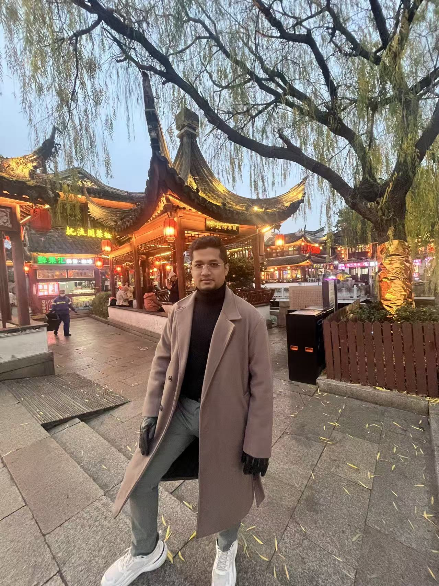

A researcher, engineer, and lifelong learner navigating the intersection of artificial intelligence and real-world optimization.

I am a Bangladeshi AI researcher and cloud technologist currently based in China. My academic journey at the Nanjing University of Information Science and Technology spans a Bachelor's in Electronic Information Engineering, a Master's in Artificial Intelligence, and currently a PhD in Artificial Intelligence — a foundation that bridges hardware understanding with intelligent software systems and advanced research methodology.
My research sits at the cutting edge of computational intelligence, where I design and refine metaheuristic algorithms — particularly Differential Evolution and Particle Swarm Optimization — to solve complex real-world optimization problems. I believe the most elegant solutions emerge when mathematical rigor meets practical necessity.
Beyond the lab, I serve as a Technical Support Engineer at ZStack Cloud (Alibaba Cloud Ecosystem), where I translate technical expertise into tangible infrastructure solutions. I am also a founding member of MetaVirt Information Technologies Private Limited, a Bangladesh-based enterprise infrastructure software company that provides private cloud, virtualization, software-defined storage, Kubernetes, and backup solutions — helping organizations build modern infrastructure with 60-70% lower TCO (metavirt.io).
My motto, "Effort meets opportunity," reflects a philosophy shaped by years of cross-cultural study, leadership in student organizations, and a multilingual fluency that connects me to communities across Asia.
| Full Name | Islam Taharimul |
| Nationality | Bangladesh |
| Phone | +86 132 3652 5380 |
| mtaharimulchina@gmail.com / iam@taharimulislam.com | |
| linkedin.com/in/mirrobin | |
| GitHub | github.com/mirmrobin |